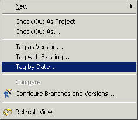
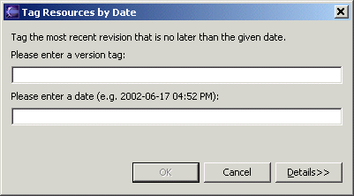

CVS Tag By DateNote: This command is not available under Eclipse 3.0 and above   The "Tag by Date" command allows one to tag the most recent version of a resource older than a specified date. This might be useful, for instance, to tag changes made prior to some external event or to capture a weekly snapshot. The date can be specified in a wide variety of formats. See http://ximbiot.com/cvs/wiki/index.php?title=CVS--Concurrent_Versions_System_v1.12.12.1:_Revisions#SEC50 for details. This command works directly on the repository contents. It does not require a working directory nor a prior checkout or succeeding checkin.. |